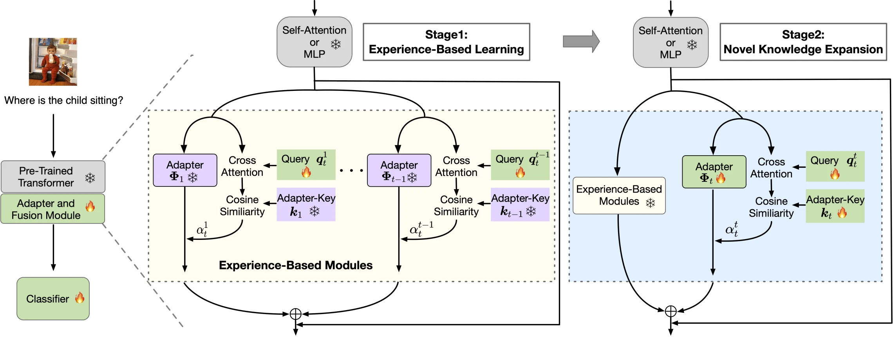
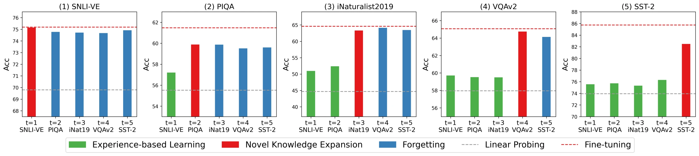

ATLAS: Adapter-Based Multi-Modal Continual Learning with a Two-Stage Learning Strategy
arXiv · October 2024 · * Equal contribution
Reuse earlier adapters, then learn what is missing
ATLAS adapts a vision-language model to a sequence of tasks using the current task's examples. A frozen ViLT backbone supplies the representation, and small task adapters accumulate reusable knowledge across vision, language, and vision-language tasks.

Experience-based learning
For each example, attention and cosine similarity estimate how much each earlier adapter contributes. ATLAS learns the weights for combining the frozen adapters.
Novel knowledge expansion
A new task adapter learns what the first stage missed. Orthogonality regularization encourages adapter keys and task queries to capture distinct information.
Continual learning and downstream transfer
The main experiment trains on SNLI-VE, PIQA, iNaturalist 2019, VQAv2, and SST-2 in that order. The upstream evaluation measures retention on earlier tasks. Downstream experiments evaluate transfer to VCR, NLVR2, CommonsenseQA, and Places365.
Takeaway After five upstream tasks, average downstream accuracy rose from 45.81% to 49.09% in the standard setting and from 39.09% to 42.57% in low-shot linear probing, relative to the corresponding pretrained-model baselines.
| Evaluation | Comparison baseline | Baseline | ATLAS |
|---|---|---|---|
| Standard | Pretrained ViLT, linear probing | 45.81% | 49.09% |
| Low-shot probing | Pretrained ViLT, linear probing | 39.09% | 42.57% |
| Low-shot adapter learning | Task-specific adapter | 41.39% | 44.10% |
